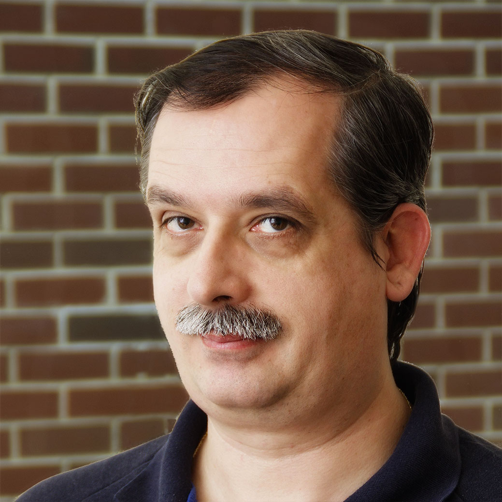
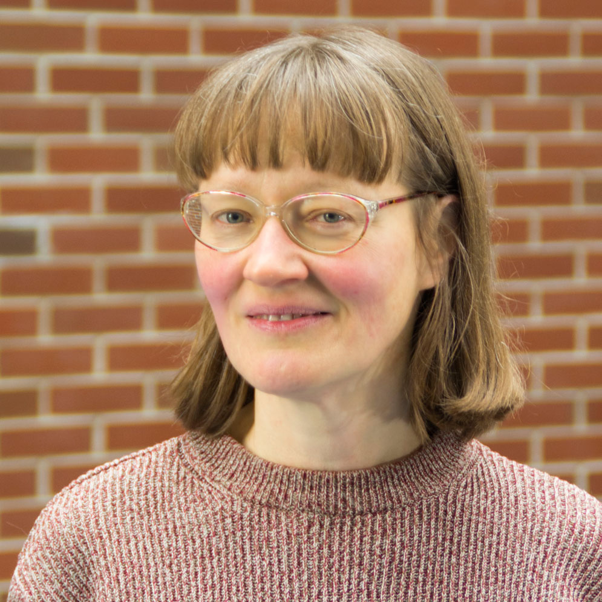
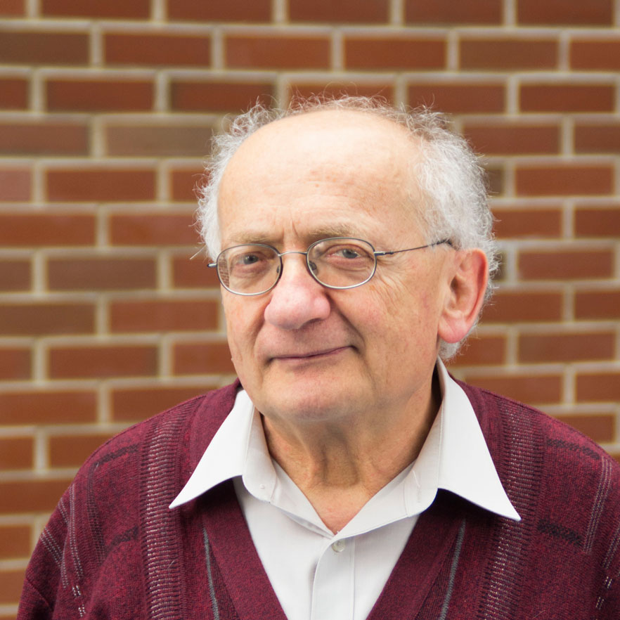
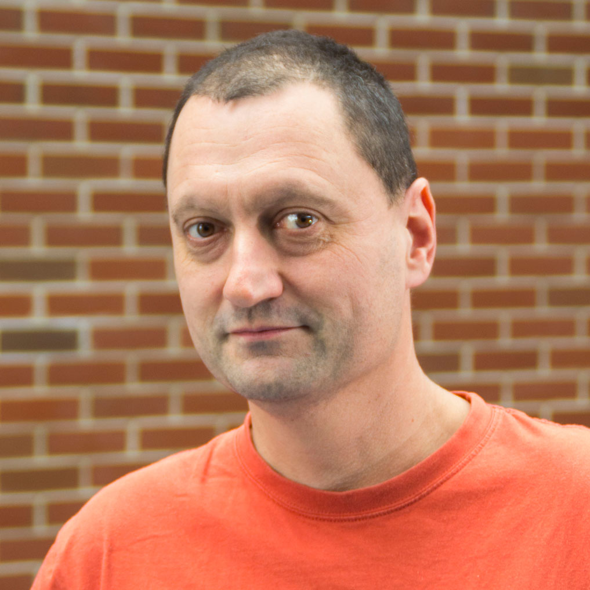
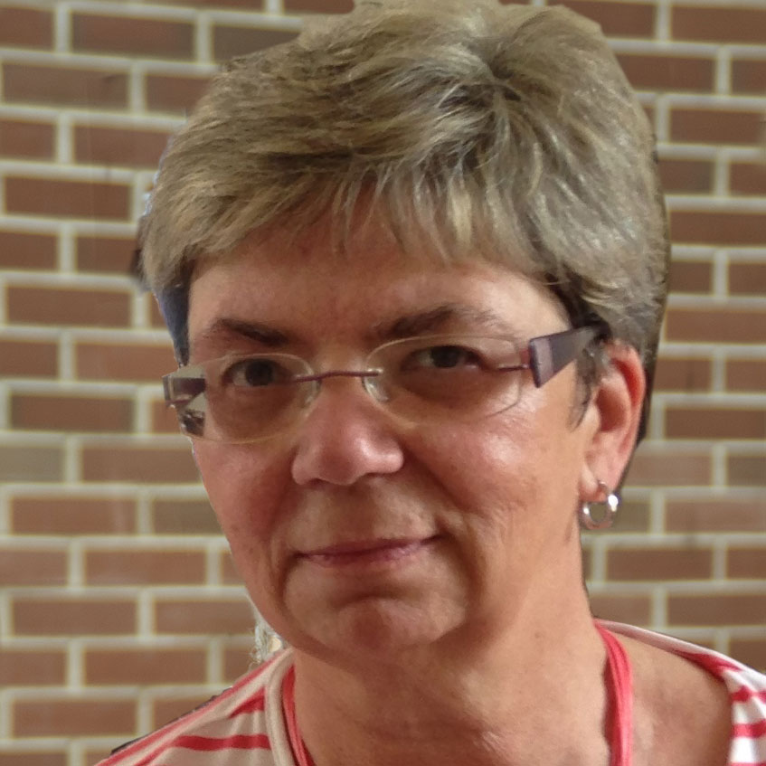

Tanszékvezető
| Dr. Katona Gyula egyetemi docens IB 133/aa tel: 463-2587 |
 |
Fő- és félállású munkatársak
| Dr. Csákány Rita egyetemi docens IB 137/a tel: 463-3156 |
 | Csehi Csongor György egyetemi tanársegéd IE 2.17.3 tel: 463-3159 |
|
| Dr. Csima Judit egyetemi docens IB 136/b tel: 463-2987 |
Dr. Fleiner Tamás egyetemi docens IB 137/b tel: 463-3161 |
||
| Dr. Friedl Katalin egyetemi docens IB 137/a tel: 463-3156 |
Dr. Györfi László professor emeritus IE 215 tel: 463-3146 |
||
| Dr. Ketskeméty László egyetemi docens IE 2.16.2 tel: 463-2897 |
Dr. Pach Péter Pál egyetemi adjunktus IB 136/b tel: 463-2987 |
||
| Dr. Pintér Márta egyetemi docens IE 2.17.2 tel: 463-3158 |
Dr. Recski András egyetemi tanár IE 214 tel: 463-2984 |
 | |
| Dr. Sali Attila egyetemi docens IB 137/b tel: 463-3161 |
Dr. Schlotter Ildikó egyetemi docens IB 136/b tel: 463-2987 |
||
| Dr. Simonyi Gábor egyetemi tanár IE 2.17.3 tel: 463-3159 |
Szabó Réka egyetemi tanársegéd IB 136/a tel: 463-3162 |
||
| Dr. Szeredi Péter nyug. egyetemi docens IE.2.16.3 tel: 463-2986 |
Dr. Szeszlér Dávid egyetemi docens IB.136A tel: 463-3162 |
||
| Dr. Telcs András egyetemi docens IE.2.16.2 tel: 463-2897 |
Dr. Tóth Géza egyetemi docens IE.2.17.2 tel: 463-3158 |
 | |
| Dr. Wiener Gábor egyetemi docens IB.136A tel: 463-3162 |
Doktoranduszok
| Kabódi László IB 137/a 463-3156 |
Papp László IE.2.17.3 463-3159 |
||
| Soltész Dániel IE.2.16.3 463-3159 |
Varga Kitti IE.2.17.2 463-3158 |
||
| Zlantniczki Ádám IE.2.17.2 463-3158 |
Külső munkatársak
| Balázs Barbara babraat@cs.bme.hu |
Bérczi Kristóf berczikr@freemail.hu |
| Buzga Viktor vik.barca@gmail.com |
Daróczy Bálint daroczyb@sztaki.hu |
| Drótos Márton marton.drotos@sztaki.hu |
Kaszanitzky Viktória blunoka@gmail.com |
| Kápolnai Richárd richard@iit.bme.hu |
Kiss Gergely kisss@cs.elte.hu |
| Kőrösi Attila korosi@tmit.bme.hu |
Mester Beáta banan.bea@citromail.hu |
| Mihálka Éva Zsuzsanna zsmihalka@gmail.com |
Nagy Péter peternagy0619@gmail.com |
| Ottucsák György oti@cs.bme.hu |
Pácsonyi Imre pacsonyii@cs.bme.hu |
| Patkós Balázs patkos@renyi.hu |
Peregi Tamás petamas@gmail.com |
| Richlik György IE.2.16.2 463-2897 richlik@cs.bme.hu |
Sándor Zoltán sandor.zoltan.14@gmail.com |
| Sebők Márton sebokmarton@cs.bme.hu |
Simon Balázs sbalazs03@freemail.hu |
| Szatmári Zoltán zee@cs.bme.hu |
Tassy Gergely tassyg@gmail.com |
| Titkos Tamás titkostamas@gmail.com |
Vidor Sára vidor.sari@gmail.com |
Adminisztráció, rendszergazdák
| Czenkiné Boltizár Katalin gazdasági ügyintéző IB.133B tel: 463-2585 |
 | Magyarné Boltizár Ildikó ügyvivő szakértő IB.133B tel: 463-2585 |
|
| Vas Lászlóné hivatalsegéd IB.132 tel: 463-2585 |
|||
| Bornemissza Péter rendszergazda IE.504 tel: 30/otkilencvenegy-2693 |
Molnár Péter rendszergazda IB.135 tel: 30/nyolcnegyvenegy-2320 |